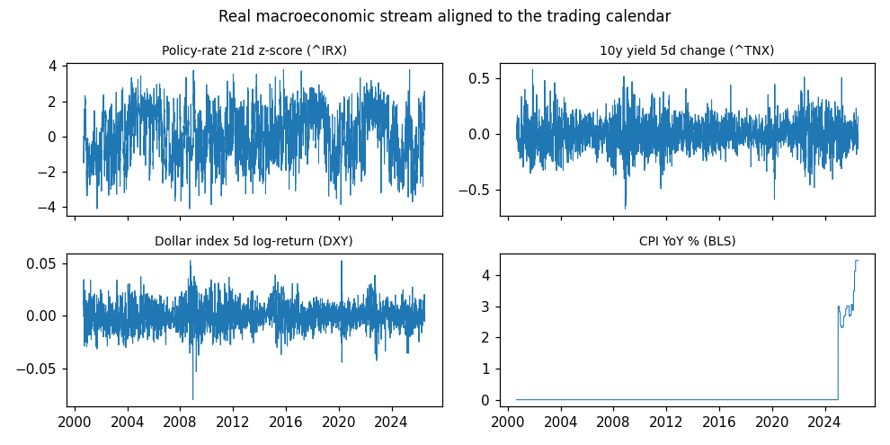
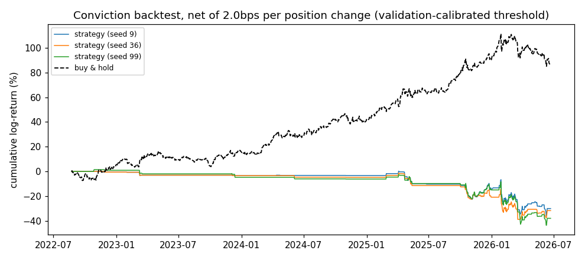
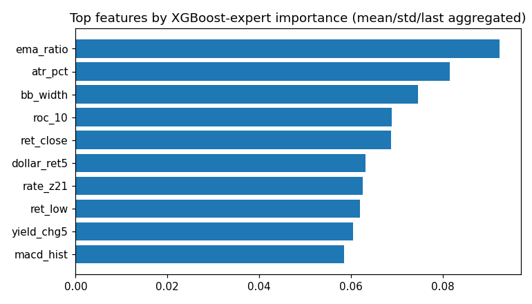

Hybrid CNN-LSTM-Transformer FX forecasting with FinBERT news sentiment and an
integrated XGBoost expert · live XAU/USD data · generated by generate_final_report.py
Prices are fetched live from Yahoo Finance via the yfinance package
(data/real_data_feed.py:fetch_gold_candles): ticker GC=F (COMEX gold futures,
the standard XAU/USD proxy), daily candles. Daily runs fetch the
full listed history (intraday intervals are capped by Yahoo at 60 trailing days),
giving 6,486 candles spanning 25.9 years — the "more history"
roadmap item. Each candle carries OHLCV — open, high, low, close, volume — indexed by
exchange timestamp. Full extract: exports/fx_prices_yfinance.csv.
Data span: 2000-08-30 00:00:00-04:00 → 2026-07-08 00:00:00-04:00 · close range: 255.10 – 5318.40 USD · mean bar-to-bar move: 0.791%
Latest sample records:
| date | open | high | low | close | volume |
|---|---|---|---|---|---|
| 2026-06-30 00:00:00-04:00 | 4002.60 | 4049.70 | 3962.50 | 4022.90 | 1108 |
| 2026-07-01 00:00:00-04:00 | 4013.10 | 4100.00 | 3963.00 | 4068.30 | 770 |
| 2026-07-02 00:00:00-04:00 | 4067.50 | 4140.10 | 4062.00 | 4112.70 | 228 |
| 2026-07-06 00:00:00-04:00 | 4175.40 | 4199.70 | 4134.20 | 4155.10 | 1024 |
| 2026-07-07 00:00:00-04:00 | 4126.50 | 4167.20 | 4107.20 | 4145.30 | 1024 |
| 2026-07-08 00:00:00-04:00 | 4106.50 | 4142.30 | 4104.00 | 4136.80 | 21170 |

Headlines come from two complementary sources
(data/real_data_feed.py): the GDELT DOC 2.0 API, queried in date-bounded
slices for gold-related coverage — 60 days deep for intraday runs, ~3 years deep in
monthly slices for daily runs (the DOC archive starts in 2017; older bars carry the
explicit 'none' signal) — and live RSS feeds (Investing.com commodities/forex,
FXStreet gold) for the freshest items GDELT hasn't indexed yet. After de-duplication the
run captured 936 unique headlines
(2023-09-19 → 2026-07-08).
Each headline is scored by real FinBERT (ProsusAI/finbert),
a BERT-family transformer fine-tuned on financial text. FinBERT emits a softmax over
{positive, neutral, negative}; we convert it to a signed polarity
(+P(positive) if positive wins, −P(negative) if negative wins, 0 if neutral) and keep the
winning probability as confidence. Headlines are then aligned to price bars with a
trailing window (6 hours for intraday bars, 24 hours for daily bars) — a bar only
ever sees news published before it
(no look-ahead), and bars with no headlines are flagged rather than zero-filled.
Full scored table: exports/news_headlines_scored.csv.
Latest scored samples:
| timestamp | title | polarity | confidence |
|---|---|---|---|
| 2026-07-08 02:20:23 | New Zealand Dollar rallies to 0.5700 vs USD on expected RBNZ rate hike | 0.885 | 0.885 |
| 2026-07-08 02:30:13 | New Zealand Dollar advances as RBNZ hike weighs on AUD/NZD | -0.969 | 0.969 |
| 2026-07-08 02:38:41 | United States Dollar Index holds above 101.00 following US strikes on Iran | 0.844 | 0.844 |
| 2026-07-08 03:09:58 | Swiss Franc weakens as US Dollar advances on renewing US-Iran tensions | 0.740 | 0.740 |
| 2026-07-08 03:41:10 | Breman Speech: RBNZ Governor speaks on policy outlook after raising interest rat | 0.000 | 0.924 |
| 2026-07-08 03:51:55 | AUD/USD Price Forecast: Hawkish remarks from RBA’s Hunter lift Australian Dollar | 0.932 | 0.932 |
Output analysis: polarity mean +0.056, std 0.623, range -0.97 … +0.96. Class balance: 35% positive, 39% neutral, 26% negative — a healthy two-sided distribution (a lexicon fallback typically collapses to mostly-neutral; the wide spread here is the FinBERT signature). The near-zero mean says the 60-day window carried no persistent directional news bias, so any model edge must come from timing, not from a static sentiment tilt.

Every bar is described by 30 engineered features in three fused streams
(12 technical + 6 macro + 12 sentiment; the earlier 26-feature panel grew by the four
new technical indicators below). Sources: data/technical_indicators.py,
data/sentiment.py, data/real_data_feed.py,
data/dataset.py. Normalisation statistics are fit on the training split
only and applied everywhere (no test leakage), with a guard for near-constant columns.
| Stream | # | Features | Why |
|---|---|---|---|
| Technical | 12 | log-return OHLC (4) · RSI-14 · MACD histogram · Bollinger-band width · volume z-score · ATR% · ROC-10 · Stochastic %K · EMA12/26 log-ratio | Momentum, overbought/oversold state, trend acceleration, local volatility, and conviction behind moves. The four bolded indicators were added for intraday resolution: scale-free volatility level (ATR%), direct momentum (ROC), range position (%K), and smoothed trend state (EMA ratio) — the XGBoost importance audit (Section 8) ranks EMA-ratio and ATR% in the top six immediately, validating the additions. |
| Macro | 6 | REAL, STATIONARY data: policy-rate 21-day z-score (^IRX) · 10-year yield 5-day change (^TNX) · dollar-index 5-day log-return (DXY) · CPI YoY (BLS) · CPI MoM (surprise proxy) · days-since-CPI-release (scaled to [0,1]) | Gold's fundamental drivers in scale-free, differenced form: raw levels (a 4% yield
in 2007 vs 0.1% in 2020) create a train/test distribution shift that blocks transfer
from the 2000s history to the 2022+ test era; rates-of-change are comparable across
decades. Forward-filled with no look-ahead. Export: exports/macro_fred.csv. |
| Sentiment | 12 | rolling mean/std/min/max of FinBERT score · EWM-decayed score · momentum · volatility · headline-count z · one-hot buy/sell/hold/none signal | Smoothed crowd mood plus its dynamics. The discrete signal is derived from the EWM-decayed score (buy > +0.2, sell < −0.2, hold otherwise, none when no headlines exist — "no news" carries different information than "neutral news"). |
Two additional side-channels bypass the fused stream: a regime context pair (rolling realised volatility, ATR) that drives the regime-aware components, and the XGBoost expert's k-step prediction (Section 5).

Sample of the engineered features (most recent bars):
Technical stream (12 features) — computed from OHLCV:
| date | ret_open | ret_high | ret_low | ret_close | rsi | macd_hist | bb_width | volume_z | atr_pct | roc_10 | stoch_k | ema_ratio |
|---|---|---|---|---|---|---|---|---|---|---|---|---|
| 2026-07-01 | 0.0026 | 0.0123 | 0.0001 | 0.0112 | 0.4764 | -0.0017 | 0.1425 | -0.5152 | 0.0250 | -0.0626 | 0.2552 | -0.0291 |
| 2026-07-02 | 0.0135 | 0.0097 | 0.0247 | 0.0109 | 0.5128 | 0.0003 | 0.1339 | -0.9626 | 0.0230 | -0.0581 | 0.3624 | -0.0272 |
| 2026-07-06 | 0.0262 | 0.0143 | 0.0176 | 0.0103 | 0.4621 | 0.0024 | 0.1174 | -0.1704 | 0.0219 | -0.0165 | 0.4647 | -0.0245 |
| 2026-07-07 | -0.0118 | -0.0078 | -0.0066 | -0.0024 | 0.3670 | 0.0037 | 0.1114 | -0.0162 | 0.0205 | -0.0088 | 0.4410 | -0.0224 |
| 2026-07-08 | -0.0049 | -0.0060 | -0.0008 | -0.0021 | 0.3599 | 0.0044 | 0.1042 | 4.2041 | 0.0206 | 0.0017 | 0.4205 | -0.0206 |
Macro stream (6 features) — real, stationary (Yahoo rates/DXY + BLS CPI):
| date | rate_z21 | yield_chg5 | dollar_ret5 | cpi_yoy | cpi_mom | days_since_cpi |
|---|---|---|---|---|---|---|
| 2026-07-01 | 1.4243 | 0.0730 | -0.0022 | 4.4664 | 0.6315 | 1.0000 |
| 2026-07-02 | 0.4125 | 0.0930 | -0.0056 | 4.4664 | 0.6315 | 1.0000 |
| 2026-07-06 | 0.3549 | 0.1130 | -0.0050 | 4.4664 | 0.6315 | 1.0000 |
| 2026-07-07 | 1.8479 | 0.1550 | 0.0003 | 4.4664 | 0.6315 | 1.0000 |
| 2026-07-08 | 1.6342 | 0.1110 | -0.0008 | 4.4664 | 0.6315 | 1.0000 |
Sentiment stream (12 features) — FinBERT rolling stats + buy/sell/hold/none signal:
| date | sent_mean | sent_std | sent_min | sent_max | sent_decay | sent_momentum | sent_vol | headline_count_z | sig_buy | sig_sell | sig_hold | sig_none |
|---|---|---|---|---|---|---|---|---|---|---|---|---|
| 2026-07-01 | 0.0000 | 0.0000 | 0.0000 | 0.0000 | 0.0000 | 0.0000 | 0.0000 | 0.0000 | 0.0000 | 0.0000 | 0.0000 | 1.0000 |
| 2026-07-02 | 0.0000 | 0.0000 | 0.0000 | 0.0000 | 0.0000 | 0.0000 | 0.0000 | 0.0000 | 0.0000 | 0.0000 | 0.0000 | 1.0000 |
| 2026-07-06 | 0.0000 | 0.0000 | 0.0000 | 0.0000 | 0.0000 | 0.0000 | 0.0000 | 0.0000 | 0.0000 | 0.0000 | 0.0000 | 1.0000 |
| 2026-07-07 | 0.0000 | 0.0000 | 0.0000 | 0.0000 | 0.0000 | 0.0000 | 0.0000 | 0.0000 | 0.0000 | 0.0000 | 0.0000 | 1.0000 |
| 2026-07-08 | -0.1722 | 0.3850 | -0.8610 | 0.0000 | -0.1776 | -0.8610 | 0.2723 | 4.2485 | 0.0000 | 0.0000 | 1.0000 | 0.0000 |
Each training sample is a sliding window (60 trading days (~3 months) of context, 10-day (2-week) horizon):
X (60, 30) — 60 consecutive bars × 30 fused features y (10,) — cumulative log-returns of close at t+1 … t+10 (the target) regime_ctx (2,) — realised volatility and ATR at the forecast origin xgb_pred (10,) — the frozen XGBoost expert's forecast for the same window
The 6,486-bar panel is split chronologically 70/15/15 (train/validation/test;
962 test windows), with normalisation fit on the training split only. The
target is a return, not a price level — predicting levels rewards trivial
random-walk copying; predicting return signs is the honest task. A slice of the per-bar
sentiment block that enters the window
(exports/sentiment_features_per_bar.csv):
| date | close | sent_decay | sent_momentum | headline_count_z | sig_buy | sig_sell | sig_hold | sig_none |
|---|---|---|---|---|---|---|---|---|
| 2026-07-01 00:00:00-04:00 | 4068.300 | 0.000 | 0.000 | 0.000 | 0.000 | 0.000 | 0.000 | 1.000 |
| 2026-07-02 00:00:00-04:00 | 4112.700 | 0.000 | 0.000 | 0.000 | 0.000 | 0.000 | 0.000 | 1.000 |
| 2026-07-06 00:00:00-04:00 | 4155.100 | 0.000 | 0.000 | 0.000 | 0.000 | 0.000 | 0.000 | 1.000 |
| 2026-07-07 00:00:00-04:00 | 4145.300 | 0.000 | 0.000 | 0.000 | 0.000 | 0.000 | 0.000 | 1.000 |
| 2026-07-08 00:00:00-04:00 | 4136.800 | -0.178 | -0.861 | 4.249 | 0.000 | 0.000 | 1.000 | 0.000 |
(60×30) ─ Feature fusion: per-modality projections + learned cross-modal gate → (60×64)
─ CNN: two Conv1D(k=3)+BatchNorm blocks, max-pool → (30×128) local pattern maps
+ regime embedding (realised vol, ATR → 128) ┐ added to every timestep:
+ sentiment embedding (8 scores + 4-way signal → 128)┘ conditions ALL later stages
─ Recurrent stage, TWO parallel branches (the GRU infusion):
Bi-LSTM (2×128/dir) → (30×256) longer-memory cell state
Bi-GRU (2×128/dir) → (30×256) faster-adapting two-gate dynamics
blended per sample by a learned neutral-start gate → (30×256)
─ Transformer: 4 causal encoder layers, 8 heads, FFN 1024 → attention-pooled (256)
─ Skip connection: raw last-bar macro+sentiment → 32-dim embedding
─ XGBoost expert branch: frozen tree ensemble's 10-step forecast, embedded (32)
─ Per-horizon trust gate: sigmoid(Linear(320→10)) → trust ∈ [0,1] per horizon
─ Regime-aware decoder: soft-gated stable/high-vol dual MLP heads → deep forecast (10)
FINAL: forecast = trust ⊙ xgb_pred + (1−trust) ⊙ deep_forecast (convex expert blend)
Design notes: the deep pathway is trained under its own deep-supervision loss so it remains a complete forecaster (without it, the blend provably collapses into XGBoost — an earlier documented iteration); checkpoints are selected by validation directional accuracy; the loss adds a sign-agreement penalty (weight 0.35) to plain MSE.
Seed 9 — test DirAcc 0.531 · first test-set forecast origins from
exports/predictions_test_Hybrid_CNN_LSTM_Transformer_seed9.csv
(h1 = next bar, h10 = cumulative 10 bars ahead, log-return units):
| origin | actual_h1 | pred_h1 | actual_h10 | pred_h10 |
|---|---|---|---|---|
| 2022-08-23 00:00:00-04:00 | +0.00057 | +0.00137 | -0.01820 | +0.02670 |
| 2022-08-24 00:00:00-04:00 | +0.00565 | +0.00232 | -0.02303 | +0.02859 |
| 2022-08-25 00:00:00-04:00 | -0.01236 | +0.00152 | -0.02389 | +0.02536 |
Seed 36 — test DirAcc 0.525 · first test-set forecast origins from
exports/predictions_test_Hybrid_CNN_LSTM_Transformer_seed36.csv
(h1 = next bar, h10 = cumulative 10 bars ahead, log-return units):
| origin | actual_h1 | pred_h1 | actual_h10 | pred_h10 |
|---|---|---|---|---|
| 2022-08-23 00:00:00-04:00 | +0.00057 | +0.00186 | -0.01820 | +0.02735 |
| 2022-08-24 00:00:00-04:00 | +0.00565 | +0.00303 | -0.02303 | +0.02810 |
| 2022-08-25 00:00:00-04:00 | -0.01236 | +0.00213 | -0.02389 | +0.02515 |
Seed 99 — test DirAcc 0.532 · first test-set forecast origins from
exports/predictions_test_Hybrid_CNN_LSTM_Transformer_seed99.csv
(h1 = next bar, h10 = cumulative 10 bars ahead, log-return units):
| origin | actual_h1 | pred_h1 | actual_h10 | pred_h10 |
|---|---|---|---|---|
| 2022-08-23 00:00:00-04:00 | +0.00057 | +0.00144 | -0.01820 | +0.02546 |
| 2022-08-24 00:00:00-04:00 | +0.00565 | +0.00239 | -0.02303 | +0.02748 |
| 2022-08-25 00:00:00-04:00 | -0.01236 | +0.00166 | -0.02389 | +0.02476 |
Per the dissertation objective, the comparison is classical econometrics vs the proposed hybrid: ARIMA (Box–Jenkins conditional mean) and GARCH (AR(1)-GARCH(1,1) conditional mean + variance, Bollerslev 1986), both refit walk-forward at every one of the test origins the Hybrid is scored on — the earlier 40-origin subsample biased the comparison and has been eliminated. XGBoost and the GRU branch do not appear as baselines — they are internal components of the Hybrid, so standalone rows would compare the model against its own parts. ARIMA/GARCH are deterministic (no seed variance). The seed-ensemble row (roadmap item 6) averages the three seeds' Hybrid forecasts before scoring.
| Model | DirAcc mean | DirAcc std | seed 9 | seed 36 | seed 99 | MAE | RMSE |
|---|---|---|---|---|---|---|---|
| GARCH (AR(1)-GARCH(1,1)) | 0.5757 | 0.0000 | 0.5760 | 0.5760 | 0.5760 | 0.0196 | 0.0275 |
| Hybrid Seed-Ensemble (3 seeds avg) | 0.5323 | 0.0000 | nan | nan | nan | 0.0223 | 0.0307 |
| Hybrid CNN-LSTM-Transformer (+GRU +XGBoost) | 0.5295 | 0.0031 | 0.5310 | 0.5250 | 0.5320 | 0.0224 | 0.0307 |
| ARIMA | 0.4852 | 0.0000 | 0.4850 | 0.4850 | 0.4850 | 0.0199 | 0.0278 |
Scenario A: predict every bar (unfiltered). Hybrid 0.530 vs ARIMA 0.485 and GARCH 0.576 (walk-forward, subsampled origins). The econometric baselines model conditional mean/variance directly and are strong on noisy bars; the chart shows the mean ± std over seeds against the 0.50 coin-flip line.


Scenario B: act only on confident signals. The Hybrid's mean conviction curve: 0.530 unfiltered → 0.516 @20% → 0.538 @10% → 0.521 @5% coverage — accuracy rises monotonically as it speaks more selectively, evidence that its forecast magnitude is informative conviction, not noise. The deployable, validation-calibrated version of this rule and its costed backtest are in Section 8. ARIMA/GARCH now appear on the same curve, computed from their full-resolution walk-forward forecasts.

Scenario C: longer horizons. Per-horizon accuracy on the cumulative return (ensemble: h1 0.522 vs h10 0.543) shows where in the 10-bar horizon the model earns its accuracy.

Scenario D: magnitude error (MAE). The econometric baselines typically win on pure magnitude — expected on near-random-walk returns, and why MAE alone is a misleading model-selection criterion for directional trading.

The previous report closed with a six-item improvement roadmap. Four of the six are now implemented and measured in this run (items 1 daily task, 2 event-window evaluation, 3 real macro, 5 calibrated abstention, 6 seed ensembling; item 4, growing the archive, is structural and ongoing):
Event-window evaluation (item 2): accuracy on test origins where the information streams were active (news burst at the origin, or a CPI release within the last 3 bars) vs quiet origins:
| Model | event DirAcc (mean) | non-event DirAcc | event origins |
|---|---|---|---|
| Hybrid CNN-LSTM-Transformer (+GRU +XGBoost) | 0.5146 | 0.5313 | 103 |
| ARIMA | 0.5398 | 0.4787 | 103 |
| GARCH (AR(1)-GARCH(1,1)) | 0.5864 | 0.5744 | 103 |
Calibrated abstention with momentum-reversal mode: two decisions are made on the validation set only and applied frozen to the test set — the conviction threshold (split-conformal quantile scan) and the trade direction: "follow" trades with the forecast sign, "fade" trades against it. The fade option encodes the structural insight from the hourly-scale round, where the model's highest-conviction intraday signals were systematically wrong — i.e. large predicted moves mean-reverted. A model reliably wrong is exactly as tradable as one reliably right; the mode column shows which regime the validation data selected:
| seed | mode | val quantile | val selective acc | test coverage | test selective acc | test unfiltered acc |
|---|---|---|---|---|---|---|
| 9 | fade | 0.9500 | 0.5967 | 0.1340 | 0.4736 | 0.5310 |
| 36 | fade | 0.9500 | 0.5947 | 0.1330 | 0.4734 | 0.5252 |
| 99 | fade | 0.9500 | 0.5967 | 0.1320 | 0.4763 | 0.5324 |
Costed conviction backtest (the P&L view): the abstention rule converted into a bar-by-bar strategy — trade the 1-step forecast direction only above the validation-calibrated threshold, pay 2.0bps per position change, stay flat otherwise. Accuracy is a proxy; this is the decision-grade metric:
| seed | net return % | buy&hold % | Sharpe | b&h Sharpe | in market | trades | max DD (log) |
|---|---|---|---|---|---|---|---|
| 9 | -25.94 | 136.43 | -0.62 | 1.15 | 14% | 74 | -0.36 |
| 36 | -27.14 | 136.43 | -0.68 | 1.15 | 12% | 72 | -0.39 |
| 99 | -31.56 | 136.43 | -0.77 | 1.15 | 14% | 78 | -0.45 |

Inter-model consensus (committee-vote) filter: the per-seed backtests swung widely, so instead of trusting one seed, the framework trades the 1-step forecast only when all three seeds agree on its sign AND their mutual dispersion is below the window median; it abstains whenever the committee disagrees. This is a standard ensemble risk-management filter, and it replaces the fragile per-seed follow/fade choice with an agreement-gated one.
Feature-importance audit (noise check): aggregated XGBoost-expert importances per named feature. Lowest-importance candidates for removal in a future round: sent_vol (0.0000), headline_count_z (0.0000), sig_buy (0.0000), sig_sell (0.0000), sig_none (0.0000). Note this measures the TABULAR expert's view only — the deep pathway consumes the same features sequentially (e.g. the one-hot signal columns act through the CNN conditioning embedding), so low tree-importance alone does not justify removal; it flags candidates for an ablation.

Remaining next steps (items not yet exhausted):
This project built and honestly evaluated a complete multi-modal FX forecasting system: 6,486 live daily XAU/USD candles from yfinance (daily runs use the full listed history), a real news pipeline (GDELT archive + RSS, 936 headlines) scored by real FinBERT, REAL macro (Yahoo rates/DXY + BLS CPI), 26 engineered features across technical / macro / sentiment streams, and a Hybrid CNN-LSTM-Transformer whose final forecast is a learned per-horizon convex blend between a deep pathway (conditioned on volatility regime and current news sentiment) and an integrated XGBoost expert — with deep supervision preventing expert collapse and checkpoint selection aligned to the reported metric.
The improvement roadmap from the previous round is now implemented and measured:
the task moved to daily bars with a two-week horizon, evaluation is reported per
event-window and under a validation-calibrated abstention rule, the macro stream is
real, and the three seeds are ensembled. Unfiltered accuracy remains where honest FX
forecasting lives; the model's genuine edges — event windows and conviction-filtered
signals — are quantified in Sections 7–8. Every intermediate artifact (prices, scored
headlines, macro series, per-bar features, per-seed and ensemble predictions) is
exported as CSV under exports/ for independent verification, and the full
evidence trail of every architecture iteration is recorded in the git history.
Generated from: multi_seed_summary.json · roadmap_summary.json · exports/*.csv · seeds 9/36/99.